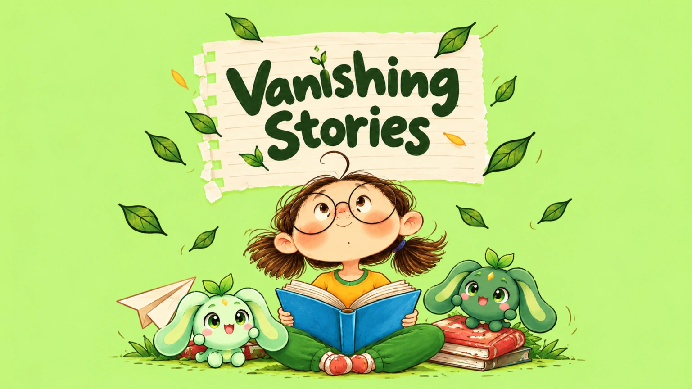
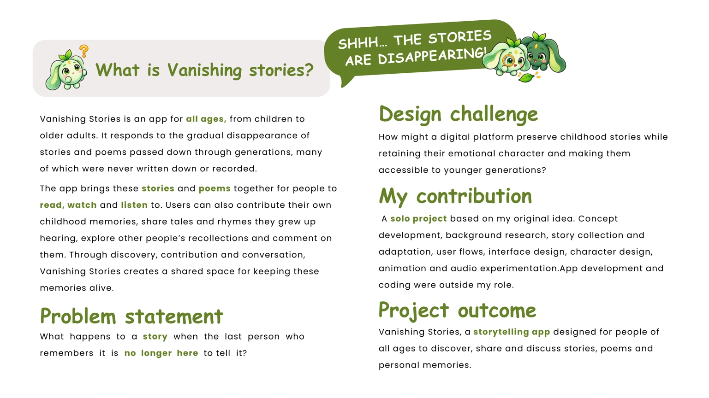
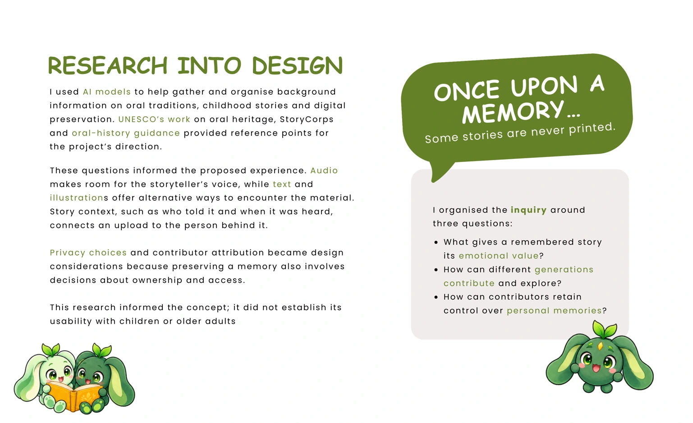
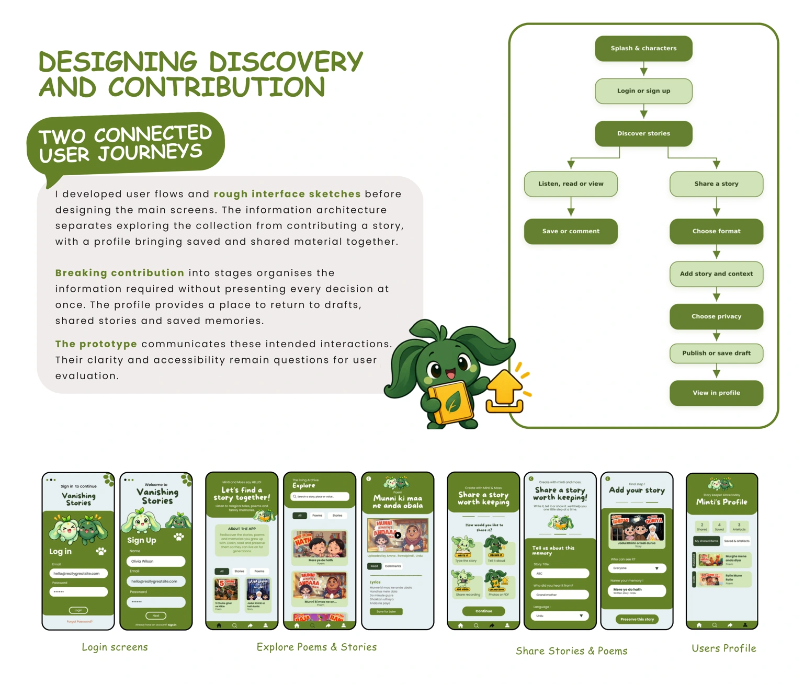
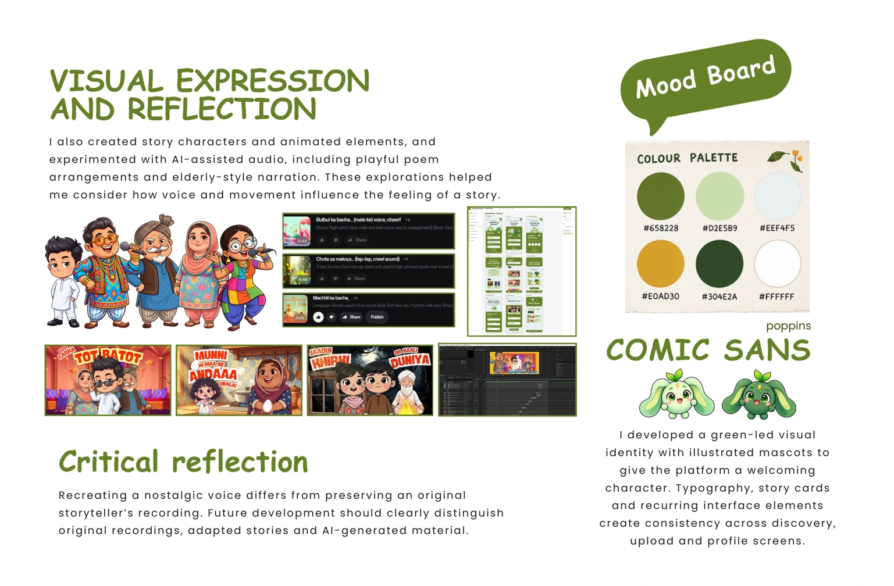

Vanishing Stories — a whimsical reading adventure.

What is Vanishing stories? Design challenge My contribution Project outcome Problem statement What happens to a story when the last person who remembers it is no longer here to tell it? Vanishing Stories is an app for all ages, from children to older adults. It responds to the gradual disappearance of stories and poems passed down through generations, many of which were never written down or recorded. How might a digital platform preserve childhood stories while retaining their emotional character and making them accessible to younger generations? A solo project based on my original idea. Concept development, background research, story collection and adaptation, user flows, interface design, character design, animation and audio experimentation.App development and coding were outside my role. Vanishing Stories, a storytelling app designed for people of all ages to discover, share and discuss stories, poems and personal memories. The app brings these stories and poems together for people to read, watch and listen to. Users can also contribute their own childhood memories, share tales and rhymes they grew up hearing, explore other people’s recollections and comment on them. Through discovery, contribution and conversation, Vanishing Stories creates a shared space for keeping these memories alive. SHHH… THE STORIES ARE DISAPPEARING!

ONCE UPON A MEMORY… Some stories are never printed. I used AI models to help gather and organise background information on oral traditions, childhood stories and digital preservation. UNESCO’s work on oral heritage, StoryCorps and oral-history guidance provided reference points for the project’s direction. These questions informed the proposed experience. Audio makes room for the storyteller’s voice, while text and illustrations offer alternative ways to encounter the material. Story context, such as who told it and when it was heard, connects an upload to the person behind it. Privacy choices and contributor attribution became design considerations because preserving a memory also involves decisions about ownership and access. This research informed the concept; it did not establish its usability with children or older adults What gives a remembered story its emotional value? How can different generations contribute and explore? How can contributors retain control over personal memories? I organised the inquiry around three questions: RESEARCH INTO DESIGN

DESIGNING DISCOVERY AND CONTRIBUTION I developed user flows and rough interface sketches before designing the main screens. The information architecture separates exploring the collection from contributing a story, with a profile bringing saved and shared material together. Breaking contribution into stages organises the information required without presenting every decision at once. The profile provides a place to return to drafts, shared stories and saved memories. The prototype communicates these intended interactions. Their clarity and accessibility remain questions for user evaluation. TWO CONNECTED USER JOURNEYS Login screens Explore Poems & Stories Share Stories & Poems Users Profile

VISUAL EXPRESSION AND REFLECTION Critical reflection I developed a green-led visual identity with illustrated mascots to give the platform a welcoming character. Typography, story cards and recurring interface elements create consistency across discovery, upload and profile screens. I also created story characters and animated elements, and experimented with AI-assisted audio, including playful poem arrangements and elderly-style narration. These explorations helped me consider how voice and movement influence the feeling of a story. Recreating a nostalgic voice differs from preserving an original storyteller’s recording. Future development should clearly distinguish original recordings, adapted stories and AI-generated material. Mood Board COMIC SANS poppins
